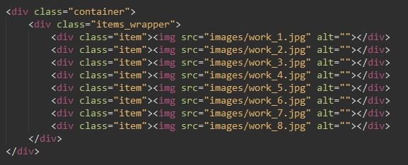
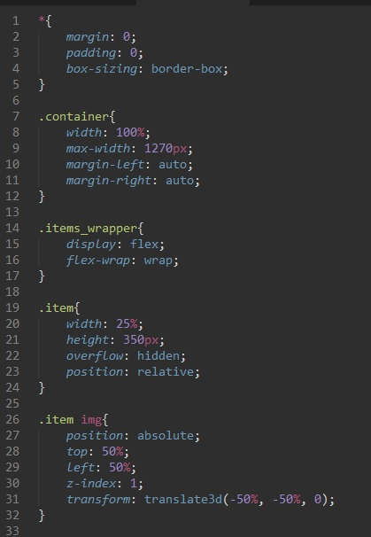

Разбор
Код HTML

Здесь по стандарту. Контейнер в котором задали максимальную ширину. внутри него обертка нашим фотограффиям. И собственно сами блоки внутри которых будут храниться блоки с img
Рассмотрим код CSS

стр 1-5
- margin: 0; - обнуляем внешние отступы
- padding: 0; - обнуляем внутренние отступы
- box-sizing: border-box; - устанавливаем алгоритм расчета параметров без учитывания отступов и бордеров
стр 7-12 (стилизуем контейнер)
- width: 100%; - выставляем 100% ширину (это для маленьких экранов)
- max-width: 1270px; - максимальная ширина блока 1270 пикселей (это для больших экранов)
- margin-left: auto; - даем отступы что бы блок выравнивался по центру
- margin-right: auto; - даем отступы что бы блок выравнивался по центру
стр 14-17 (стилизуем обертку)
- display: flex; - делаем блок флексом что бы блоки с картинками выравнивались в линию.
- flex-wrap: wrap; - указываем что можно переносить блоки на другие строки
стр 19-24 (стилизуем сами блоки внутрь которых будут помещаться изображения)
- width: 25%; - выставляем ширину блока 25% от родительского элемента, т.е на строке будет помещаться только 4 блока. Если бы не свойство box-sizing: border-box; то это бы не получалось
- height: 350px; - фиксированная высота блока
- overflow: hidden; - указываем то что те части которые будут выходить за пределы блока их будем скрывать.
- position: relative; - позиционирование для родительского элемена, что бы абсолютное позиционирование изображения отображалось корректно
стр 26-31 (стилизуем сами изображения)
- position: absolute; - абсолятное позиционирование
- top: 50%; - задаем координаты по вертикали.
- left: 50%; - задаем координаты по горизонтали
- z-index: 1; - это здесь не обязательно
- transform: translate3d(-50%, -50%, 0); - передвигаем вдоль осей изображение и получится что картинка будет отображаться ровно по середине блока.